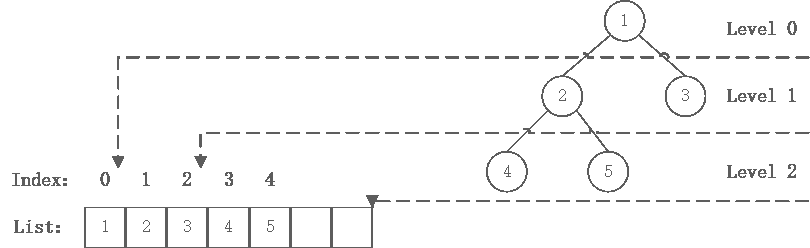
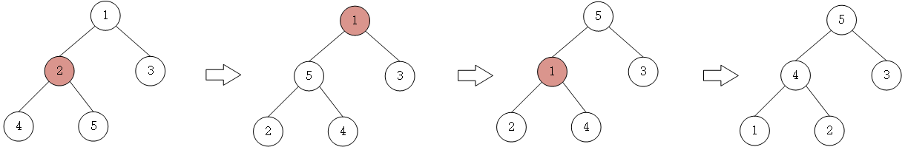
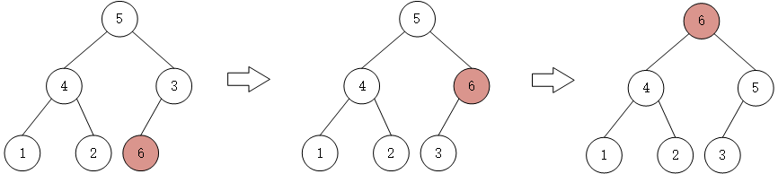

经过努力，最值总会冒上来的！
定义
- 在通常情况下，使用列表储存堆，堆树是一颗完全二叉树，二项堆和斐波那契堆不属于二叉树
- 堆树中某个节点的值总是不大于或不小于其孩子节点的值
- 堆树中每个节点的子树都是堆树
当父节点的键值总是大于或等于任何一个子节点的键值时为最大堆。 当父节点的键值总是小于或等于任何一个子节点的键值时为最小堆。 本文以最大堆作为例子，最小堆类似。
堆的建立
堆的建立并不建立一个新的树，而是对数组进行原地改动，第一个数（index=0）为完全二叉树的level 0，即根，第二个数和第三个数为level 1，以此类推。

由于数组是升序数组，我们直接得到了最小堆。但是如果要进行升序排序，算法上需要建立最大堆。也就是说，当原数组是升序时，堆排序算法遇到了最坏情况。本文也以这种情况作为例子。
nums=[1,2,3,4,5]
堆的维护
上图的根节点是1，小于子节点，那么这显然违反了最大堆的性质，这时候需要让该元素在最大堆中逐级下降，维护最大堆的性质。处理一次维护的代码如下：
def adjust_heap(idx, max_len,nums):
left = 2 * idx + 1
right = 2 * idx + 2
max_loc = idx
if left < max_len and nums[max_loc] < nums[left]:
max_loc = left
if right < max_len and nums[max_loc] < nums[right]:
max_loc = right
if max_loc != idx:
nums[idx], nums[max_loc] = nums[max_loc], nums[idx]
adjust_heap(max_loc, max_len,nums)
建立最大堆
- 自底向上处理， 因为数组
list[n//2,n]中的所有元素都在堆树的叶节点中，因此可以看成只包含一个元素的堆， 无需维护。其中n=len(list)。 - 从
index=n//2-1开始，直到index=0，对每一个节点或根进行一次维护。
注意：一次维护并不是最多只交换一次，而是交换到某节点满足最大堆条件或者index>=n为止。

def build_heap(nums):
n = len(nums)
for i in range(n // 2 - 1, -1, -1):
adjust_heap(i, n,nums)
return nums
heap=build_heap(nums)
print("heap:",heap)
#输出：heap: [5, 4, 3, 1, 2]
最大堆中插入节点
最大堆的插入节点的思想就是先在堆的最后添加一个节点，也就是在list.append()，然后沿着堆树上升。跟最大堆的初始建立过程大致相同。
def heap_insert(heap,num):
heap=heap+[num]
n=len(heap)
i=n-1
while i>0 and heap[(i-1)//2]<num:
heap[i]=heap[(i-1)//2]
i=(i-1)//2
heap[i]=num
return heap
heap=heap_insert(heap,6)
print("heapIns:",heap)
#输出：heapIns: [6, 4, 5, 1, 2, 3]

最大堆节点的删除
对一个节点的删除就是交换该节点和最后一个叶子节点的值，然后从该节点开始一次adjust_heap()
def heap_delete(heap,idx):
n=len(heap)
heap[idx],heap[-1]=heap[-1],heap[idx]
adjust_heap(idx, n - 1,heap)
heap.pop()
return heap
heap=heap_delete(heap,0)
print("heapDel:",heap)
#输出：heapDel: [5, 4, 3, 1, 2]
堆排序
特殊地，当我们交换根和最后一个叶子节点时，就能够提出最大值，并且存放在index=-1的位置。然后再对前n-1个数组成的最大堆进行该处理，以此类推，最终完成堆排序。
def heap_sorted(heap):
for i in range(1, len(heap)):
heap[0], heap[-i] = heap[-i], heap[0]
adjust_heap(0, n - i,heap)
return heap
heapSort=heap_sorted(heap)
print("heapSort:",heapSort)
#输出：heapSort: [1, 2, 3, 4, 5]
错误与不足请不吝指正，转载请注明，谢谢
参考
本博客所有文章除特别声明外，均采用 CC BY-SA 3.0协议 。转载请注明出处！